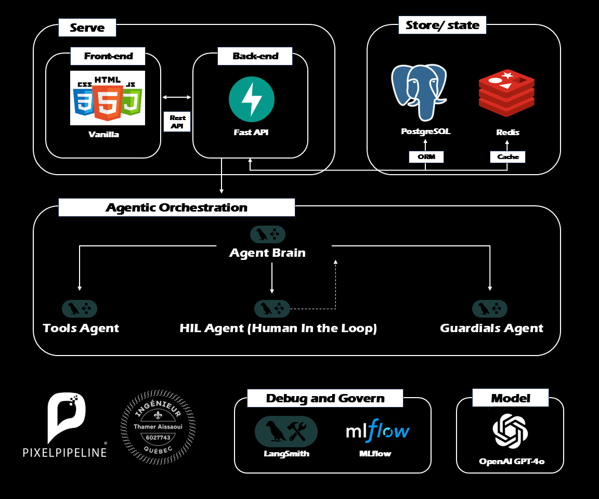

Enterprise Medical AI with Strict Guardrails
A production-ready healthcare AI assistant designed to autonomously handle complex tasks while enforcing uncompromising safety and privacy. This solution demonstrates how to deploy reasoning engines that strictly protect patient data and adhere to enterprise compliance rules.

Video Demonstration
The Architecture: The "Input Firewall" Approach
In highly regulated industries like healthcare, safety cannot be an afterthought. Our architecture moves beyond simple chat interfaces to an explicit, graph-based routing system. Every cognitive step and safety check is definitively controlled, ensuring maximum security and auditability.
Zero-Trust Data Privacy
Protecting Personally Identifiable Information (PII) is non-negotiable. Our system intercepts and aggressively redacts sensitive data—like contact information or financial details—before it ever reaches the AI processing layer, guaranteeing absolute data sovereignty.
Deterministic Security Controls
We implement hard-wired security barriers that instantly recognize and block harmful topics or prompt injection attempts. This immediate short-circuiting not only prevents hijacking but also ensures predictable, safe behavior at all times.
Human-in-the-Loop Oversight
For sensitive operations such as booking appointments or processing payments, the AI automatically pauses its workflow. It requires explicit, human-in-the-loop approval before proceeding, placing the final decision firmly in your control.
Automated Compliance Validation
Ensure regulatory alignment on every interaction. Our deterministic output validators automatically append mandatory medical disclaimers and compliance notices to all AI-generated responses, mitigating risk and ensuring consistency.
Resilient Error Handling
Designed for real-world reliability, our agent gracefully manages rejections and workflow interruptions. When human overseers deny a sensitive action, the AI seamlessly pivots, providing clear, empathetic explanations to the end user without crashing.